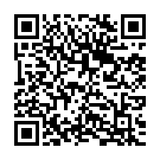
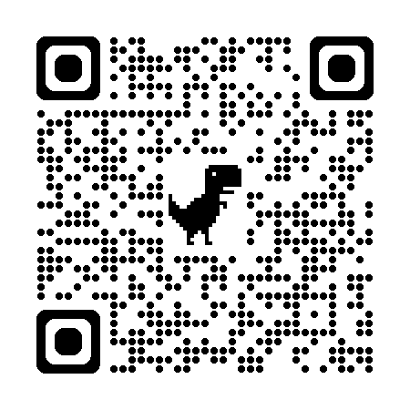
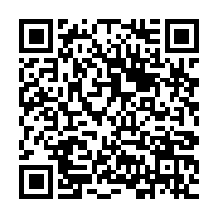
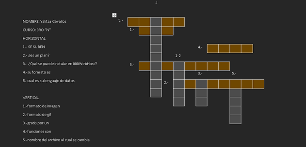

Un código QR (del inglés Quick Response code), es la evolución del código de barras. Es un módulo para almacenar información en una matriz de datos o en un código de barras bidimensional. La matriz se lee en el dispositivo móvil por un lector específico, y de forma inmediata nos lleva a una aplicación en Internet, un mapa de localización, un correo electrónico, una página web o un perfil en una red social. Fue creado en 1994 por la compañía japonesa denso wave, subsidiaria de Toyota. Presenta tres cuadrados en las esquinas que permiten detectar la posición del código al lector. El objetivo de los creadores, un equipo de dos personas dirigido por Masahiro Hara,1 fue que el código permitiera que su contenido se leyera a alta velocidad. Los códigos QR son muy comunes en Japón, donde son el código bidimensional más popular.
Características generales
Los tres cuadrados de las esquinas permiten detectar al lector la posición del código QR. La estructura general de un código QR es una matriz bidimensional de módulos de dos colores contrastados, en principio blancos y negros. Hay varias versiones de códigos QR según la cantidad de módulos que forman la matriz: van desde la versión 1 (con una matriz de 21 x 21 módulos) hasta la versión 40 (con 177 x 177 módulos). Las versiones de más módulos admiten mayor cantidad de información en el código. Los códigos más extendidos para el uso del público en general suelen ser los de 25 x 25 y de 29 x 29, para captura desde el teléfono móvil o celular en cualquier situación (paquetes de productos, folletos de mano, tarjetas o carteles de pared).
Una de las utilidades estructurales de los códigos QR es que no es imprescindible que lo formen módulos blancos y negros, sino que admite una cierta personalización bastante flexible (otros colores, degradados, etc.). No obstante, cuando se usan otros colores distintos de blanco y negro, es necesario que sean suficientemente contrastados (claro y oscuro), para que continúe siendo legible para los sistemas y programas de lectura de los códigos.
Aunque inicialmente se usó para registrar repuestos en el área de la fabricación de vehículos, hoy los códigos QR se usan para administración de inventarios en una gran variedad de industrias, como por ejemplo pasarelas de pago, pago de compra de productos comerciales, facturas electrónicas 2 entre otros. La inclusión de software que lee códigos QR en teléfonos móviles ha también permitido nuevos usos orientados al consumidor, que se manifiestan en comodidades como el dejar de tener que introducir datos de forma manual en los teléfonos. Las direcciones y los URLs se están volviendo cada vez más comunes en revistas y anuncios. El agregado de códigos QR en tarjetas de presentación también se está haciendo común, y permite simplificar en gran medida la tarea de introducir detalles individuales del nuevo cliente en la agenda de un teléfono móvil.
En
la actualidad encontramos códigos QR en los que se pueden incorporar imágenes personalizadas, contribuyendo a dar un aspecto más artístico y personal, y siendo muy útil en los códigos que dan acceso a la información de una persona. La patente del código de barras (no exactamente del código QR, sino una tecnología de escaneo similar) se registró originalmente en 1952 por Joseph Woodland en forma de diana de tiro al blanco, y luego perfeccionada por George Laurer a una forma rectangular en los años 70 por solicitud de las cadenas de supermercados,3 y afirma Sánchez (2003) que fue a partir de los años ochenta cuando tuvo un importante éxito comercial que ahora vemos diariamente en envases, paquetes, y hasta en tarjetas personales de presentación.4 Desde el punto de vista técnico, los códigos son elementos complejos, sin embargo para los usuarios es una acción fácil que consiste en leer el código a través de la cámara del teléfono inteligente.
Este gráfico demuestra cómo leer la información de un código QR. Los códigos QR también pueden leerse desde computadores personales, teléfonos inteligentes o tabletas mediante dispositivos de captura de imagen como escáneres o cámaras de fotos, programas que lean los datos QR y una conexión a Internet para las direcciones web.
El estándar japonés para códigos QR (JIS X 0510) se publicó en enero de 1998 y su correspondiente estándar internacional ISO (ISO/IEC18004) se aprobó en junio de 2000.
Actualmente, el código QR es el más famoso de código de barras 2D en el mundo y su éxito se remonta a la década del 2000 en Japón, donde se convirtieron en un estándar y hasta 2010 comenzaron su expansión en los Estados Unidos y Europa, principalmente en anuncios. Como dato adicional, Unitag.io (S.F.) afirma que para 2011 un promedio de 5 Códigos QR eran escaneados diariamente por cada japonés, esto superó por mucho al promedio de SMS enviados al día.5
Otro ejemplo de código QR Un detalle importante sobre el código QR es que, a diferencia de otros formatos de códigos de barras bidimensionales como el BIDI, su código es abierto y sus derechos de patente (propiedad de Denso Wave) no se ejercen.
PDF QR

VIDEO web hosting

TRIPTICO

crucigrama

preguntas de diseño
1.- ¿Qué es gestor de contenido?
Un sistema de gestión de contenidos o gestor de contenidos, también conocido por las siglas CMS, es un programa informático que permite la creación y administración de contenidos digitales, principalmente en páginas web, por parte de los administradores, editores, participantes y demás usuarios
2.-¿Qué son los gestores y para que sirve?
Un Sistema Gestor de Base de Datos (SGBD) o DGBA (Data Base Management System) es un conjunto de programas no visibles que administran y gestionan la información que contiene una base de datos Los gestores de base de datos o gestores de datos hacen posible admnistrar todo acceso a la base de datos ya que tienen el objetivo de servir de interfaz entre ésta, el usuario y las aplicaciones.
3.- ¿Cuáles son los gestores más conocidos?
A continuación, se muestran los cinco principales gestores de bases de datos más utilizados en la actualidad junto con sus características:
MySQL. El gestor de base de datos MySQL es el más común en la actualizad al estar basado en código abierto. ...
Microsoft SQL Server. ...
PostgreSQL. ...
MongoDB. ...
SQLite.
4.- ¿Qué es un CMS?
El término CMS proviene del inglés Content Management System, que significa Sistema de Gestión de Contenidos. Es un sistema online que nos permite poner en marcha un sitio web de forma práctica y rápida.
Pero, no es únicamente eso, sino que su gran ventaja, como su nombre lo dice, es la posibilidad de administrar contenidos dinámicos de forma sencilla, es decir, mantener un blog, un ecommerce o cualquier otro tipo de página web que demande una actualización constante.
Imagina tener que realizar de forma manual actualizaciones semanales o, incluso, diarias, sin duda no funcionaría.
Para esto y mucho más, un CMS es la solución ideal para todos los que necesitan un sitio web que no sea 100% estático o momentáneo (o sea, hecho para permanecer funcionando por un breve período).
5.- ¿Qué hace un gestor de contenido?
Un CMS (Content Management System) o gestor de contenidos no es más que una herramienta para creación y administración de contenidos, en concreto, en este curso nos referiremos a un CMS como a la herramienta que nos permitirá administrar los contenidos de una web.
6.- ¿Qué son los sistemas de gestión de contenido?
Un sistema de contenido, a menudo abreviado como CMS, es un software que ayuda a los usuarios a crear, administrar y modificar contenido en un sitio web sin la necesidad de conocimientos técnicos especializados.
En un lenguaje más simple, un sistema de gestión de contenido es una herramienta que le ayuda a construir un sitio web sin necesidad de escribir todo el código desde cero (o incluso saber cómo codificar).
7.- ¿Qué es y para qué sirve un CMS?
Se trata de un software que te ayuda a administrar contenidos dinámicos, por ejemplo, un blog, un ecommerce o cualquier tipo de página web. Especialmente es para aquellos que necesitan una actualización constante. Gracias a los CMS cualquier usuario sin ningún tipo de conocimiento en programación puede administrar a través de una interfaz gráfica todos los aspectos de una página web. Desde crear y editar con
8.- características más importantes del CMS
Características del CMS
Separa código y contenido. ...
Permite cambiar el diseño y la estructura de la página de una manera simple por medio de plantillas.
Ofrece una secuencia de funciones simples.
Se enfoca en el contenido SEO.
Gestiona el enlace asociado a cada contenido.
9.- que tipo de cms hay
Tipos de CMS: conoce las diferentes opciones para los sitios web
CMS de código abierto.
WordPress.
Drupal.
Joomla.
CMS propietarios.
Sitecore.
Adobe Experience Manager.
HubSpot.
10.- ¿Qué es la gestión de contenido y como se desarrolla?
La gestión de contenido es el proceso de planificar, crear, distribuir y evaluar el contenido digital que se utiliza para comunicar un mensaje, informar a una audiencia o persuadir a una acción. El contenido puede ser de diferentes tipos, como texto, imágenes, audio, video, infografías, etc.